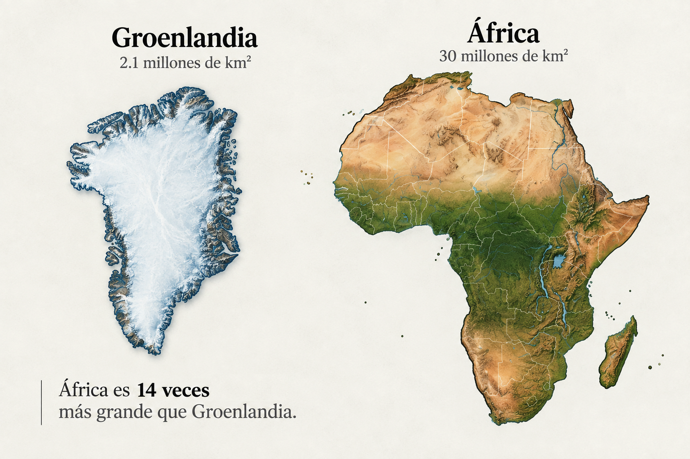
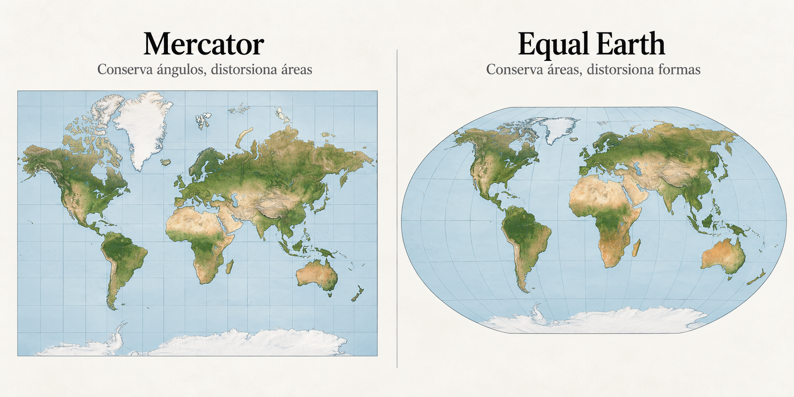

Artículo de divulgación
Un nuevo mapa de nuestro planeta
Conoce la matemática detrás de la polémica de los mapas en la ONU
La reciente resolución de Naciones Unidas sobre la representación de la Tierra en los mapas ha reabierto un debate de más de cuatro siglos. El problema de fondo no es político, sino geométrico: ¿cómo representar una superficie curva sobre un plano sin deformarla?
Introducción
A primera vista, podría parecer extraño que la representación del planeta llegue hasta la Asamblea General de las Naciones Unidas. Después de todo, sabemos dónde están África, Europa, América y Groenlandia. Las superficies de los países están medidas y sus coordenadas geográficas pueden determinarse con enorme precisión.
El problema aparece cuando intentamos dibujar todo eso sobre una hoja de papel o una pantalla.
El 4 de septiembre de 2026, la Asamblea General de la ONU aprobó una resolución promovida por Togo y respaldada por el Grupo Africano para fomentar representaciones cartográficas que reflejen mejor el tamaño relativo de las distintas regiones de la Tierra. La iniciativa recibió 164 votos a favor, seis abstenciones y un voto en contra, el de Estados Unidos.
Esto no significa que la ONU haya ordenado reemplazar todos los mapas ni que las fronteras vayan a modificarse. La resolución tampoco prohíbe la proyección de Mercator. Su propósito es promover, especialmente en contextos educativos e informativos, proyecciones que representen adecuadamente las áreas relativas de los continentes.
La controversia tiene una explicación matemática bastante más interesante que la discusión política.
El problema comienza con la geometría
La Tierra es aproximadamente esférica. Más precisamente, se modela mediante un elipsoide de revolución, mientras que los mapas generalmente son planos.
Transformar coordenadas geográficas \((\lambda,\varphi)\) —donde \(\lambda\) representa la longitud y \(\varphi\) la latitud— en coordenadas cartesianas \( (x,y) \) requiere una función de transformación
A esta transformación la llamamos proyección cartográfica.
El inconveniente fundamental es que no existe una transformación de una superficie esférica a un plano que conserve simultáneamente todas sus propiedades geométricas.
Por eso, cualquier proyección debe sacrificar algo. Puede conservar razonablemente bien los ángulos, las áreas, ciertas distancias o algunas direcciones, pero no todo al mismo tiempo.
Por lo tanto, no deberíamos preguntarnos cuál es el mapa correcto, sino qué propiedad queremos preservar y para qué utilizaremos el mapa.
Mercator nunca fue diseñada para comparar continentes
La proyección de Mercator fue presentada por Gerardus Mercator en 1569. Su extraordinario éxito histórico se debe a una propiedad matemática muy útil para la navegación.
En su versión esférica puede expresarse mediante
La ecuación de la segunda componente es particularmente reveladora. La coordenada \(y\) no aumenta linealmente con la latitud. Conforme nos aproximamos a los polos, crece cada vez más rápidamente.
De hecho,
Por esta razón los polos ni siquiera pueden representarse regularmente en una proyección de Mercator.
Esta deformación no es un error accidental. Es precisamente lo que permite obtener una de las características que hicieron tan útil a Mercator para la navegación.
La proyección es conforme, es decir, conserva localmente los ángulos. Las líneas de rumbo constante (loxodromias) aparecen como líneas rectas, una propiedad extraordinariamente práctica para los navegantes de los siglos posteriores a su aparición.
Sin embargo, la conservación de los ángulos trae consigo una distorsión de las áreas.
La distorsión puede calcularse
En la proyección esférica de Mercator, el factor de escala local depende de la latitud aproximadamente como
Como la escala se amplifica en dos direcciones, el factor de distorsión de área es
Esto permite cuantificar el problema:
- En el ecuador, \(\varphi=0^\circ\). Por lo tanto, \(K=1\). No existe amplificación local del área.
- A una latitud de \(45^\circ\), \(K={1}/{\cos^2(45^\circ)}=2\). El área local aparece duplicada.
- A una latitud de \(60^\circ\), \(K={1}/{\cos^2(60^\circ)}=4\). La amplificación ya es de cuatro veces.
- A una latitud de \(80^\circ\), \(K \approx 33\). La distorsión crece rápidamente al acercarnos a los polos.
Esto explica por qué las regiones situadas en latitudes altas adquieren una presencia visual desproporcionada en un mapamundi de Mercator.
El ejemplo de Groenlandia y África
En muchos mapas de Mercator, Groenlandia parece tener dimensiones comparables con las del continente africano, pero la realidad es muy diferente.
Groenlandia tiene aproximadamente \(2.17\textsf{ millones de km}^2\), mientras que África posee alrededor de \(30.3\textsf{ millones de km}^2\).
Por lo tanto,
Entonces, África tiene casi catorce veces la superficie de Groenlandia.

No es que Mercator haya calculado incorrectamente las superficies. Simplemente no fue diseñada para conservarlas. Por eso, utilizarla para comparar visualmente el tamaño de continentes equivale a utilizar un instrumento fuera de las condiciones para las que fue diseñado.
Una proyección que conserva las áreas
La resolución de la ONU ha dado visibilidad a la proyección Equal Earth, presentada en 2018 por Bojan Šavrič, Tom Patterson y Bernhard Jenny. Su característica esencial es que pertenece a la familia de las proyecciones equivalentes o de igual área.

Esto significa que mantiene proporcionalidad entre las áreas representadas en el mapa y las correspondientes áreas sobre la Tierra.
Si dos regiones tienen superficies reales \(A_1\) y \(A_2\), una proyección equivalente busca preservar la relación
África puede entonces compararse visualmente con Groenlandia, Europa, América del Norte o cualquier otra región sin introducir la enorme amplificación latitudinal característica de Mercator.
Pero Equal Earth también deforma. Para conservar las áreas debe sacrificar otras propiedades, principalmente la forma, las distancias y determinadas relaciones angulares. Y esto no es un error, es una consecuencia inevitable de representar una superficie curva en dos dimensiones.
No existe la proyección perfecta
Este es quizá el aspecto científico más importante de toda la discusión.
Decir que Equal Earth es simplemente una proyección «correcta» y Mercator una proyección «incorrecta» sería una simplificación excesiva, porque resuelven problemas diferentes.
Mercator es conforme y resulta especialmente apropiada cuando interesa preservar ángulos locales y direcciones. Equal Earth es equivalente y resulta mucho más apropiada cuando queremos comparar visualmente superficies.
La elección depende del propósito. Un mapa para navegación marítima, un atlas escolar, un mapa estadístico de población, una aplicación meteorológica y una visualización de emisiones de carbono no necesariamente deberían emplear la misma proyección.
En cartografía, la precisión no puede evaluarse sin especificar primero qué magnitud queremos preservar.
La importancia en la educación
Aquí es donde la discusión adquiere especial relevancia.
Una persona que observa repetidamente un mapamundi termina construyendo una representación mental de las dimensiones relativas del planeta.
Si el mapa utilizado exagera sistemáticamente las regiones de altas latitudes, esa distorsión puede convertirse inadvertidamente en conocimiento geográfico intuitivo.
El problema no consiste en que los estudiantes aprendan una superficie numérica equivocada. Un libro puede indicar correctamente que África tiene unos 30 millones de kilómetros cuadrados.
Es un problema de percepción. Podemos leer que África es catorce veces mayor que Groenlandia y, al mismo tiempo, observar diariamente un mapa en el que ambas parecen comparables.
Para enseñar geografía mundial, demografía, recursos naturales, cambio climático o distribución territorial, una proyección equivalente puede ser más coherente con la información cuantitativa que pretendemos comunicar.
La posición mexicana durante la discusión resulta particularmente interesante desde el punto de vista técnico: México votó a favor y señaló ante la Asamblea General que Equal Earth constituye una alternativa para representar globalmente las áreas porque conserva las proporciones de las masas continentales. Al mismo tiempo, la delegación mexicana subrayó algo esencial desde la cartografía: cualquier mapa implica compromisos entre distancia, dirección, área y forma.
Esa observación resume muy bien el problema. No necesitamos sustituir un supuesto mapa incorrecto por otro supuesto mapa perfecto. Necesitamos seleccionar conscientemente la representación apropiada para cada aplicación.
La ONU no cambiará el mapa de la Tierra
No lo hará, en el sentido literal. Los continentes seguirán teniendo las mismas coordenadas, las fronteras no se modifican por esta resolución y Mercator continuará siendo matemáticamente válida para las aplicaciones en las que sus propiedades sean convenientes.
Lo que probablemente cambiará, al menos gradualmente, es qué proyección consideramos apropiada para representar nuestro planeta en contextos generales, educativos e informativos.
La resolución de la ONU no resuelve un problema geométrico que lleva siglos siendo conocido. Ninguna resolución podría hacerlo.
Lo que hace es llamar la atención sobre una decisión que muchas veces pasa inadvertida. Cada vez que convertimos la superficie aproximadamente esférica de nuestro planeta en un rectángulo, estamos eligiendo qué propiedades conservar y cuáles deformar.
En ese sentido, un mapa no es simplemente un dibujo reducido de la Tierra, es un modelo matemático de la Tierra. Y, como ocurre con cualquier modelo matemático, antes de preguntarnos si es correcto debemos hacer una pregunta más importante: ¿correcto para qué?
Bibliografía
- Šavrič, B., Patterson, T., & Jenny, B. (2019). The Equal Earth map projection. International Journal of Geographical Information Science, 33(3), 454–465. https://doi.org/10.1080/13658816.2018.1504949
- Snyder, J. P. (1987). Map projections — A working manual. U.S. Geological Survey Professional Paper 1395. U.S. Government Printing Office.
- United Nations General Assembly. (2026). Correct the Map: Rebalancing global cartographic representation and promoting equitable representation of the world’s regions, particularly Africa. Eightieth session, United Nations.